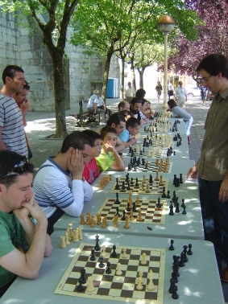
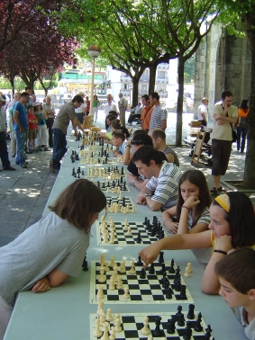

Club de Ajedrez Agustín de Leiza |
| » inicio » socios del club » cto. por equipos » últimos torneos » eventos organizados » enlaces |
Simultáneas de San JuanUn año ha pasado y de nuevo hemos organizado una sesión de simultáneas en Goiko Plaza con motivo de las fiestas patronales. De nuevo ha sido Iosu el encargado de darlas y se ha demostrado como un consumado simultaneador, ya que ha salido victorioso ante un oposición mayor que el año pasado.
Debido al éxito del año pasado este año decidimos incrementar el número de tableros a 15, quizás debamos revisar esta cifra para el año que viene, ¡pero no sé si al alta o a la baja! ya que Iosu se queja de que acaba muy cansado. El horario ha sido el mismo que el año pasado, pero parace ser que en esta ocasión a la gente se le han pegado un poco más las sábanas ya que sólo un puñado de aficionados se daban cita a las 11 en Goiko Plaza para disputar una partida con Iosu. Sin embargo a medida que avanzaba la mañana más y más gente se ha animado y al final, a pesar de la competencia de los payaso que actuaban en la parte de abajo de la plaza, se puede decir que el evento ha sido un éxito, tanto de jugadores como de público. 
Por último dar las gracias a todo el mundo que ha participado para que el evento fuese un éxito, y esperemos que el año que viene, a pesar de la crisis, se pueda mejorar.  |